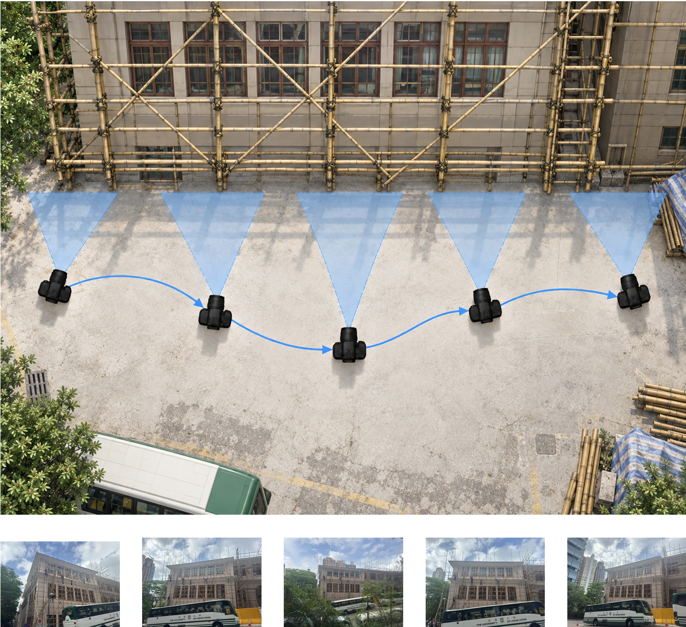
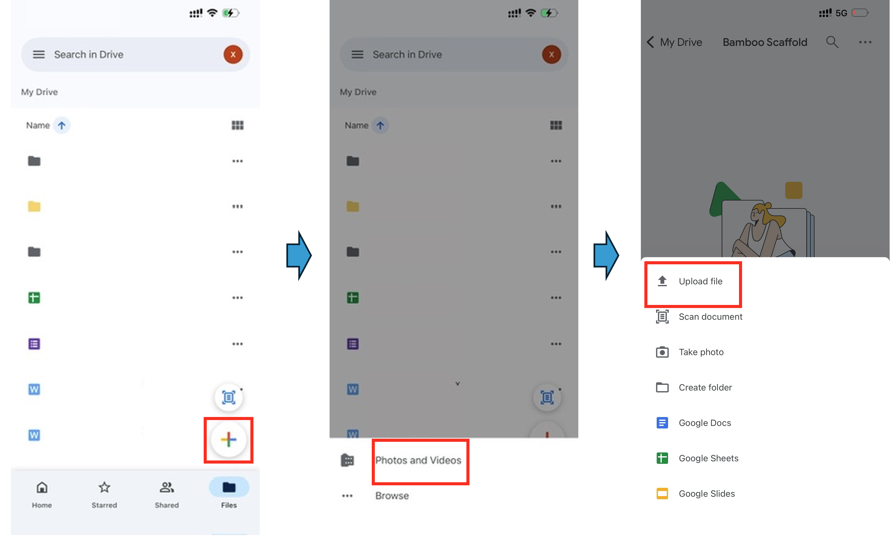

A0: Applied Exercise
Photo, File & AI Practice Notes
Please read these notes before collecting, processing, uploading, or testing your material with AI.
The aim is to preserve your original evidence carefully and to make your later AI experiments as consistent, traceable, and comparable as possible.
1. Camera & Metadata
Whenever you are collecting photographs, preserve the original image files and their available camera metadata.
Before collecting photographs:
- Turn on Location Services for your phone / camera application so that available GPS information can be stored with the image.
- Use the normal high-resolution setting of your device.
- Avoid fisheye modes and, where possible, extreme wide-angle settings that introduce substantial distortion.
- Do not deliberately reduce image resolution or quality.
When photographing three-dimensional Systems:
- Move sufficiently between viewpoints so that consecutive photographs show genuinely different views.
- Capture the System as completely as reasonably possible across the set of photographs.
- Keep lighting and exposure conditions reasonably consistent where possible.

Export camera / EXIF information
For photographs you collect yourself:
- Open the EXIF Data website.
- Upload the original photograph.
- Export the available metadata as a CSV file.
- Save the CSV together with the corresponding photograph.
- Keep both files as part of your original collection.

The exported information may include device, image dimensions, capture settings, date/time, and location information where these are available.
Not every image will contain every type of metadata. Do not add or invent missing information.
For plans, drawings, screenshots, renderings, or other material that was not produced directly by your camera, EXIF extraction may not be applicable.
2. File Naming
Use a simple and consistent naming system so that every file can be related back to its collection and scale.
Use:
C##_Scale_##
For example:
C01_Context_01.HEICC01_System_01.HEICC01_System_02.HEICC01_Detail_01.HEICC01_Detail_02.HEIC
For Collection 02:
C02_Context_01.HEICC02_System_01.HEICC02_Detail_01.HEIC
Use the same base name for the corresponding metadata file:
C01_System_01.HEICC01_System_01_EXIF.csv
Where your device produces another original format such as .DNG, keep that original format rather than converting it simply to match the examples above.
Rename files if necessary, but do not re-save or re-export the photograph simply to rename it.
Keep relationships clear
Your Context, System, and Detail material should remain cross-referenceable.
For example:
- a Detail photograph of a scaffold joint should be locatable within one of the System views;
- the System should be locatable within the wider Context;
- a room photograph should correspond to a recognisable location in a floor plan;
- a façade Detail should be locatable within the larger façade;
- a truss connection should be locatable within the complete truss.
Where this relationship is not obvious from the images themselves, keep a brief note identifying where the Detail belongs.
3. Keep Your Original Files
Maintain an organised copy of your material before doing any editing or AI work.
A simple folder structure might be:
C01/
C02/
C03/
C04/
C05/
Within each collection, keep the original images and their corresponding metadata files together.
You may later create edited images, crops, annotations, or AI-generated material, but do not overwrite your originals.
A useful rule is:
Original evidence first → derived material later
This makes it possible to return to the original evidence and check what information was actually available.
4. Uploading & Submission
Submission will be made through the course’s designated Google Form / Google Drive workflow.
The final submission link and exact upload fields will be provided separately.
When uploading:
- Upload the original image file.
- Upload its corresponding EXIF CSV, where applicable.
- Do not resize, compress, crop, convert, or re-save photographs before uploading.
- Check that the collection number and filenames are correct.
- Keep your own copy of everything you submit.

Avoid transferring the only copy of your photographs through services that may automatically compress or modify the images.
Until the submission form is released, simply keep your files organised using the naming convention above.
5. Choosing an LLM Platform
You will use a multimodal LLM to examine your visual collections.
Possible platforms include:
- Gemini — a freely accessible option;
- HKU ChatGPT — available through HKU;
- another course-approved multimodal LLM, where appropriate.
For the main experiment, choose one platform and use it consistently within each stage.
Do not casually move between different platforms or models halfway through a set of tests. Different models may behave differently, making the results difficult to compare.
If you deliberately want to compare two LLMs, treat them as separate experiments:
- repeat the same questions;
- provide the same visual evidence;
- keep the procedure as similar as possible;
- clearly identify which platform / model produced each response.
6. LLM Procedure for INTERROGATE
During INTERROGATE, you are trying to understand what the model can infer from the evidence you provide.
Treat every independent question as a new controlled test.
For each independent question
- Start a fresh conversation.
- Upload only the relevant image or images.
- Ask the question without giving hints or explaining the answer.
- Record the model’s first response.
- Continue within that same conversation to interrogate the response.
- Start another fresh conversation before testing the next independent question.
The first response is important because it shows what the model inferred from the original evidence before you taught, corrected, or guided it.
After recording the first response
You may continue the conversation and challenge the model.
For example:
- What visual evidence supports your answer?
- Which part of the image are you referring to?
- How certain are you?
- What are you assuming?
- Could there be another explanation?
- What information is missing?
- Look again. Would you revise your answer?
Record important changes in the model’s response.
For example, does it:
- correct itself;
- become more precise;
- contradict itself;
- maintain an incorrect answer;
- introduce unsupported information;
- acknowledge uncertainty or missing evidence?
Start fresh for each independent test. After recording the first response, use follow-up conversation to investigate the model's reasoning and limitations.
7. LLM Procedure for TRANSFORM
During TRANSFORM, the objective changes.
You are no longer trying to keep the AI uninformed. You are now investigating how effectively you can work with the AI through iteration.
For each selected collection:
- Begin a separate conversation / working thread for that collection.
- Explain the artefact and your transformation intention.
- Provide relevant images, observations, constraints, or references.
- Correct the AI when it misunderstands something.
- Build on promising outputs rather than continually restarting.
- Refine your instructions as the design develops.
- Keep important intermediate outputs so the evolution of the work can be understood.
Unlike INTERROGATE, the accumulated conversation is now useful.
You may also combine the conversational LLM with image generation, image editing, coding, computational tools, or other methods introduced in the course.
Where possible, keep the main LLM platform consistent throughout one transformation sequence. If you intentionally move to another model or platform, record where the change occurred so that the resulting process remains understandable.
Context, feedback, correction, references, and accumulated conversation are now part of the experiment. Build on what came before rather than restarting for every prompt.
8. Keep a Traceable Record
Throughout the exercise, keep enough information that another person could understand what you did and what evidence the AI received.
At minimum, retain:
- your original visual collection;
- collection and image filenames;
- EXIF CSV files where applicable;
- the questions used during INTERROGATE;
- the model’s first responses;
- important follow-up exchanges;
- the platform / model used;
- important prompts and intermediate outputs during TRANSFORM;
- your final selected transformations.
You do not need to document every click or every minor exchange.
Focus on preserving the information needed to reconstruct the important decisions, comparisons, successes, and failures in your investigation.